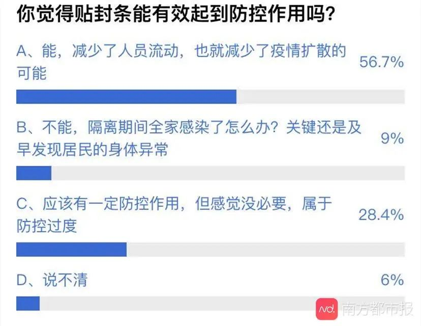
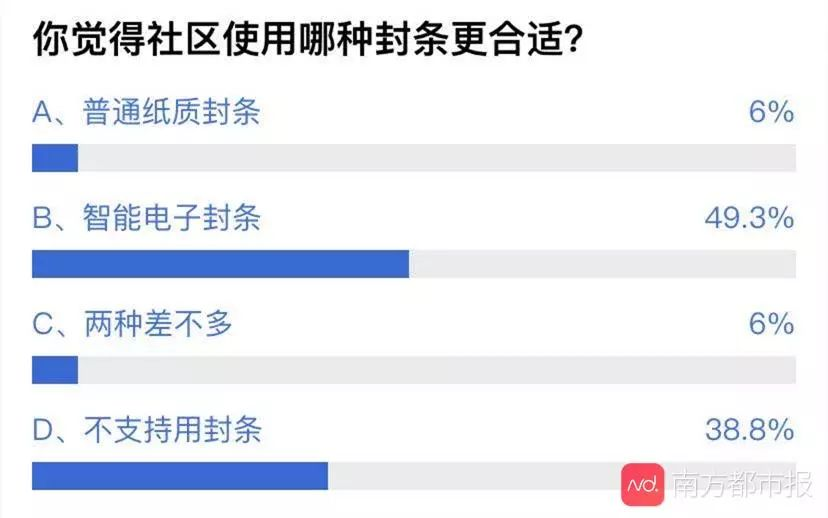
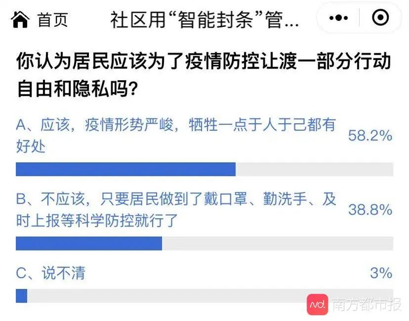

封闭社区并隔离返京人员，能遏制病毒蔓延吗？
原文链接 备份链接 数百万人的返京潮将至，北京加强防控是情理之中。但将回来的人不加区分地拒之门外或自行隔离，令本该叫好的措施变了味儿 文 |《财经》记者 信娜 孙爱民 实习记者 朱贺 编辑 | 王小 封闭社区。春节后，面对数百万人从各地陆 …
返工人员日益增加，社区防控成为重中之重。AI前哨站注意到，苏州、上海、杭州等多个地方的社区用上了“智能封条”，防止居家隔离人员擅自外出。据了解，“智能封条”使用了物联网、5G等技术，可以监测门的开关状态，一旦出现异常开门，社区人员的手机、电脑终端就会收到提醒。

多地社区用智能封条进行精准管理
“江苏苏州园区斜塘街道XX幢X单元XXX室发生居家隔离人员开门告警！隔离人员详情：XXX。”
2月19日，苏州市工业园区斜塘街道网格员尤秀兰，收到了这条来自“智能封条”的提醒。
尤秀兰负责管理斜塘街道莲花六区的10幢居民楼，春节以来一直在加班。之前，社区给居家隔离人员贴的是纸质封条，她每天早晚都要上门查看。有了智能封条以后，她注意手机提醒就行。
据了解，斜塘街道使用的“智能封条”其实是一种门磁监控产品，它以物联网网络为基础，可以监控门的开关状态。后台系统录入了居家隔离人员的手机号、隔离期限等信息，一旦门磁监控到异常开门，社区人员就能收到通知。
“这样的话其实是更方便了。要是夜里有报警，我赶不过去，也可以快速通知小区物业，让他们上门去看。”尤秀兰说，智能封条确实减轻了她的工作压力，居民也都挺配合。除了居民偶尔的误触，她基本上没有收到过来自封条的报警提醒。
斜塘街道有关负责人告诉AI前哨站，斜塘街道存在大量返苏务工人员，但街道、社区工作人员有限，无法实现对重点疫区来苏人员的24小时居家监管。因此，街道便尝试使用智能封条，从2月5日到现在，一共安装了大约100套。
居家隔离人员不能出门，要买菜、倒垃圾怎么办？尤秀兰说，街道为居家隔离人员组建了微信群，同时安排网格员和志愿者进行服务。隔离人员有什么需要就在微信群里提出来，由尤秀兰和同事上门帮忙。
AI前哨站梳理发现，不仅是苏州，上海、郑州、杭州、金华、无锡等全国多个城市的社区也在试点使用智能封条，上海市松江区中山街道甚至一口气安装了1300多套设备。这些设备的工作原理大致相同，社区青睐的原因主要是不用插电、不用连无线网、可以重复使用、告警及时。
六成投票者支持社区使用智能封条
新冠肺炎疫情发生以来，大数据、人工智能等多种新技术被应用于疫情防控。对于社区使用智能封条的做法，网友怎么看？AI前哨站就此议题在南都“热点站站队”发起投票活动。截至2月20日下午，共有2415位网友参与投票，其中“支持”一方有1568票，“反对”一方有847票。也就是说，64.9%的投票者支持社区的做法。

AI前哨站注意到，疫情发生后，使用封条已经成为社区管理居家隔离人员的普遍做法。许多社区虽然没有使用智能封条，但也用了普通的纸质封条。56.7%的投票者认为贴封条能有效起到防控作用。不过，也有28.4%的网友认为，贴封条有一定作用但没必要，属于“防控过度”。

在进一步的调查中，49.3%的网友认为智能封条比普通纸质封条更好，6%的网友认为两种封条差不多。还有38.8%的网友选择了“不支持用封条”。

不可否认的是，贴上封条后，居家隔离人员一定会丧失部分的行动自由和隐私。是否应该让居家隔离人员作出权利让渡？网友观点不一。
58.2%的网友认为，疫情形势严重，隔离人员应该且有必要作出部分牺牲。“大多数人的利益大于极少数人的利益”“非常时期就只能采取非常手段”“利用高科技防范，提高管控效果”网友“桂”“筱怡红”“草原骏马”留下了上述观点。
38.8%的网友则认为不应该，隔离人员只要做到戴口罩、勤洗手等科学防控即可。网友“云海”认为，可以倡议可以监督，但不能强制，居民的基本权利要保障。“说封上可以相信国家，那不封也应该可以，要相信民众。”他说。

学者提醒：须征得居民的知情同意，并谨防技术滥用
网友们的不同观点背后，其实涉及到新技术应用的伦理问题。围绕这一问题，AI前哨站请教了两位伦理学学者。
“借助技术来取代危险、枯燥、繁重的劳作，体现了技术谋求人类福祉的伦理旨趣。与此同时，技术发展使得我们开始反思人类的伦理地位与技术的伦理属性、技术在不同场景中的伦理功能，等等。”上海交通大学教授闫宏秀认为，智能封条用于疫情防控，是一种特殊的场景伦理案例。对于这样的特殊场景，需要基于通用伦理的基础上结合具体情况来剖析。
她指出，从动机上看，苏州等地使用智能封条的伦理动机是善意的：提醒居家隔离人员，防止疫情扩散。同时，封条所收集的数据是有限的，通过远程数据获取的方式可以减少避免交叉感染， 降低人类成本，有效提升管理与治理的效率。
“从公共安全与治理的角度来看，依法采取一切技术手段确保公共安全是合法的和必要的。”复旦大学教授杨庆峰表示，采用智能封条能够有效掌控来自重点疫区的人群动态，在这种特殊时期有一定的合法性和必要性。以智能封条为代表的物联网、大数据、人工智能等技术在疫情防控中得到使用，即通过无人化和自动化方式来确保其他人群（比如社区管理人员、同一楼栋的居民）的生命安全，也符合生命伦理中保护他人生命的原则。
在肯定智能封条作用的同时，闫宏秀和杨庆峰也从技术伦理的角度提出了一些建议。
“将收集数据的功能赋予智能封条，不是将责任让渡给技术，恰恰是更突显了人类的责任意识。”闫宏秀说，智能封条的使用应该以居民的知情同意为基准原则，且只能收集疫情防控所必须的数据，不能滥用技术权限。其次，社区收集的数据只能用于疫情防控，不能被置于其余的场景，也不能被基于其他目的重新被挖掘使用。
杨庆峰则认为，智能封条当前的应用场景有独特性，需要预研灾后相关技术在其他场景下的伦理问题。例如，如何区分诸如敏感人群、高危人群？如何制定相关场景的伦理选择标准？此外，特殊时期，使用智能封条的影响后果也需要得到研究。“被安装智能封条的住户居民好比被贴上了某种特殊标签，会成为特殊的关照对象，而这些人被技术管理的心理状态需要进一步研究。”他说。


原文链接 备份链接 数百万人的返京潮将至，北京加强防控是情理之中。但将回来的人不加区分地拒之门外或自行隔离，令本该叫好的措施变了味儿 文 |《财经》记者 信娜 孙爱民 实习记者 朱贺 编辑 | 王小 封闭社区。春节后，面对数百万人从各地陆 …
原文链接 备份链接 2月18日和19日，上海新冠肺炎确诊病例连续2天零增长。对于这个人口超过2400万的超大城市，消息令人振奋。 要帮助基层准确定位重点排查人群，入沪人员全数据的信息收集是重要的第一步。 上海复工的第一天，防控升级， …
原文链接 备份链接 市民陈琴已经超过20天没有下楼。家中没有食物或者缺少日用品，她会通过社区微信群发给物业员工，由社区或者物业统一采买，再送到她家门口。“刚开始不适应，现在已经习惯了。” 全文3611字，阅读约需7分钟 截至2020年2 …
原文链接 备份链接 每当看到那些穿着橙色工作服守在大街上的环卫工人，穿着绿马甲巡街的交警，一闪而过的黄色骑手小哥，24小时在药店守店的店员，我就觉得很安心。 而我，也是他们中的一员。 配图 | 作者供图 寻业中国·Work in …
原文链接 备份链接 在小区门口、在居委会、在火车站出口……这些机关干部的身影活跃在在各处。 记者 | 应 琛 “您好，请出示一下出入证。再来测量一下体温，谢谢”，“您是到这里看望父亲的对吗？请到这边填一下登记表，再测量一下体温”……这些 …